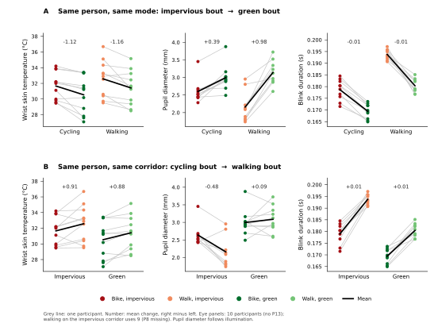

Belgium, Brussels-Capital Region, and the two routes. This is the new first figure.

File: Experiment campaign timeline.svg. Was Figure 1 before the map.

File: Experiment Sensor Setup Participant-01.svg

File: Route Plan for Experiment_05Nov.svg

File: Participants matched_8min.png

File: Figure5_exposures_by_phase.svg

File: Figure6_H1_forest.svg. Each contrast is phase mean, then 10 seconds. Shared axis −5 to 5 SD. Filled points and printed q are BH q < 0.05.

File: Figure7_H3_forest.svg. Same order and the same −5 to 5 SD axis.

File: Figure8_H2_rmcorr.svg

File: Figure9_sound_composition.svg

File: conclusion_paired_slopes.svg. Each line is one person. A is impervious to green. B is cycling to walking.

File: Figure10_outcomes_by_phase.svg. Twenty-six tiny panels of raw participant means. The H1 and H3 forests already show the tested differences. Leave this out.